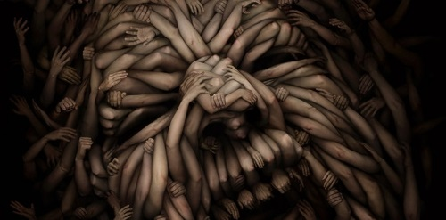

- Главная
- Все о цифровой живописи
- Примеры работ
- Программное обеспечение
Добро пожаловать на сайт!
Здесь вы узнаете все интересное о цифровой живописи. Сможете посмотреть примеры и узнать программы необходимые для цифровой живописи.
Цифровая живопись
Цифрова́я жи́вопись — создание электронных изображений, осуществляемое не путём рендеринга компьютерных моделей, а за счёт использования человеком компьютерных имитаций традиционных инструментов художника.
Создание рисунка/картины от начала и до конца на компьютере — относительно новое направление в изобразительном искусстве. Точную дату создания первого компьютерного рисунка устанавливать нет смысла ; однако примерная дата широкого появления впечатляющих и красочных работ, выполненных на ПК — 1995—1996 годы (на эту дату приходится появление и широкое распространение относительно доступных по цене SVGA-мониторов и видеокарт, способных отображать 16,7 млн цветов). Компьютер в цифровой живописи — это такой же инструмент, как и кисть с мольбертом. Для того, чтобы хорошо рисовать на компьютере, также необходимо знать и уметь применять все накопленные поколениями художников знания и опыт (законы перспективы, теория цвета, блики, рефлексы и т. д.).
Использование цифровых технологий в фотографии породило также гибридные технологии (например, фотоимпрессионизм).
Гибридные технологии применяются и в изобразительном искусстве (помимо косметического исправления или улучшения ручного оригинала). Два основных направления: сначала делается ручное изображение, которое не доводится до завершения (в основном ограничиваются рисунком), а завершается работа в компьютере; модификация завершенного ручного изображения с помощью компьютерного редактора. В последнем случае диапазон глубины обработки очень широк: от изменения только настроя (через цветовую гамму) через модификацию образа до полного изменения исходного образа — до неузнаваемости.
Прогресс цифровой живописи
В конце XX — начале XXI веков цифровая живопись бурно развивается и занимает прочные позиции в оформлении книг/плакатов, преобладает в индустрии компьютерных игр и современном кино, популярен в любительском творчестве. Причины быстрого вытеснения прежних средств из этих областей:
- Доступность
Для того чтобы создавать цифровые работы любого уровня, необходимо приобрести/иметь персональный компьютер достаточной мощности, графический планшет и несколько программ для компьютерной живописи.
- Большая скорость работы
Специализированные программы для CG-художников (например Painter) содержат большое количество инструментов, ускоряющих работу. Выбор нужного цвета — дело секунд (в отличие от традиционной живописи, где надо смешивать краски для получения нужного цвета — требует опыта и времени), выбор нужной кисти/инструмента — также почти мгновенная операция. Возможность отменять свои действия, а также возможность сохраняться в любом моменте своей работы и возвращаться к нему в последующем и ещё большой список возможностей и преимуществ — всё это делает работу профессионального художника в несколько раз быстрее при том же качестве. Кроме того, компьютерная работа сразу готова к использованию в цифровых технологиях кино, игр, вёрстки — работу, выполненную на материале красками, надо предварительно перенести в цифровой вид.
- Уникальный инструментарий
В отличие от традиционной живописи в цифровой имеются прогрессивные и высокотехнологичные функции и суперразвитые художественные возможности такие как: работа со слоями или нанесение текстур с фотографий на нужные вам участки картины; генерация шумов заданного типа; различные эффекты кистей; HDR картины; различные фильтры, трансформации и коррекции; огромное количество оттенков цветов и текстур; разнообразные структуры линий.
- Перспективы
Традиционное искусство практически достигло своего предела по совершенству техники и средств ещё в XVIII веке. С тех пор почти не добавилось ничего нового — по-прежнему у художника есть краски, пигмент, масло (или их готовая смесь), холст и кисти. Современная компьютерная живопись уже далека от лучших полотен гениев прошлого по качеству и масштабности работы — и ей есть куда развиваться дальше. Разрешение дисплеев растёт, повышается качество цветопередачи, увеличивается мощность компьютеров, меняются и совершенствуются программы для цифровой живописи, есть принципиальная возможность создания новых способов и устройств для работы с цветом/вывода цвета (проекторы или голография).
- Доступность обучения и работы
Если пользователь умеет работать на компьютере и обладает навыками рисования или имеет художественное образование — ему не составит большого труда разобраться в интерфейсе программ компьютерной живописи — он такой же, как и у большинства Windows-программ, и имеет вполне логичный цифровой инструментарий художника. В Интернете доступны видеоуроки по работе в той или иной программе, содержащие запись всех этапов работы художника над цифровой картиной.

Awesome Project

Awesome Two

Awesome Three

Project Four

Fifth Project

Sixth Project

Project Seven

Awesome Eight
Awesome Nine
Программы для цифровой живописи
Свободные программы
- GIMP — растровый графический редактор, так же подходящий для рисования.
- MyPaint — программа для рисования, бесконечный холст, много кистей и минимум функций.
- Krita — программа для рисования, часть пакета Calligra Suite.
- Alchemy — векторный графический редактор, предназначенный для рисования.
- Inkscape — векторный графический редактор, предназначенный для рисования.
Проприетарные программы
- Illustrator — один из наиболее популярных векторных редакторов от компании Adobe.
- Photoshop — один из наиболее популярных редакторов растровой графики от компании Adobe.
- CorelDraw — векторный редактор от компании Corel.
- Painter — редактор растровой графики от компании Corel.
- ArtRage — программа, ориентированная на эмуляцию традиционных средств в рисунке и живописи, простой и минималистичный интерфейс.
- Pixarra TwistedBrush Pro Studio — программа для рисунка и живописи. Более 5000 различных кистей с возможностью редактирования, много типов основ для рисования — бумаги, дерева, холста. Есть бесплатная версия TwistedBrush Open Studio. Галерея работ.
- Microsoft Expression Graphic Designer — программа, которая позволяет работать как с векторной графикой так и растровой + имеет инструментарий художника. Есть бесплатная демоверсия.
- OpenCanvas — бесплатная версия программы Open Canvas, адаптированная для рисования несколькими художниками через Интернет одновременно. Всего три инструмента и ластик. Некоторая информация о настройке доступна тут.
- Adobe Flash — изначально программа была предназначена для создания мультипликации, однако явные преимущества работы на графическом планшете с плавным нажатием пера в отличие от других графических пакетов оценили многие иллюстраторы.
- SAI — программа, предназначенная для цифрового рисования в среде Microsoft Windows, разработанная японской компанией SYSTEMAX.
Онлайн редакторы
-
Tuteta.ru — Бесконечная цифровая картина.